运行环境配置
本设计是在Visual Studio2017 的Win32 控制台应用程序下，使用OpenGL里的GLUT库开发的，开发环境搭建步骤如下：
（1）安装Visual Studio2017
（2）配置OpenGL
GLUT函数库需要下载并设置include和bin的路径，把dll文件放在system32下。
要求说明
在屏幕上显示一个包含多个虚拟物体的虚拟场景，并且能响应用户的交互操作。
要求：
（1）场景中的虚拟物体至少 2 个有纹理贴图；
（2）具有光照、阴影效果，光源的类型至少有 2 种；
（3）用户可交互实现视角切换完成对场景的任意角度浏览；
（4）允许用户通过键盘或者鼠标实现对场景中至少两个物体进行交互控制 （例如移动，旋转，缩放等）。
主要技术
场景搭建
本设计主要使用了glPushMatrix()和glPopMatrix()。
将本次需要执行的缩放、平移等操作放在glPushMatrix()和glPopMatrix()之间,可以消除上一次的变换对本次变换的影响，使本次变换是以世界坐标系的原点为参考点进行的。
glPushMatrix()和glPopMatrix()方便我们独立的设计场景中的物体，不用受到其他物体的影响。
纹理设计
本系统采用加载BMP纹理图像并贴图到物体上的方法来实现纹理。
加载BMP图像具体实现如下：
函数LoadTexture():传参：BMP图像的名称、目的纹理名称
1.首先创建名为texid的纹理——glGenTexture()；
2.其次读取BMP图像的数据——LoadImage()、GetObject()、glPixelStorei()（设置像素存储模式规范，读取数据时每读取4个字节渲染一行）；
3.然后将该纹理图像绑定到目的纹理名上——glBindTexture()
4.进行纹理过滤操作——glTexParameteri()；
5.最后载入二维纹理并释放句柄——glTexImage2D()、DeleteObject()
纹理贴图具体实现如下：
首先创建纹理名：
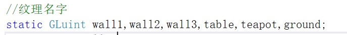
然后在初始化函数init()中加载纹理：
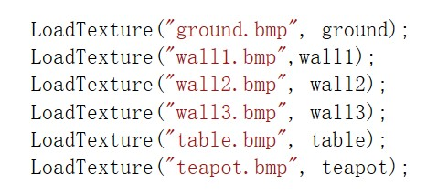
最后贴图：
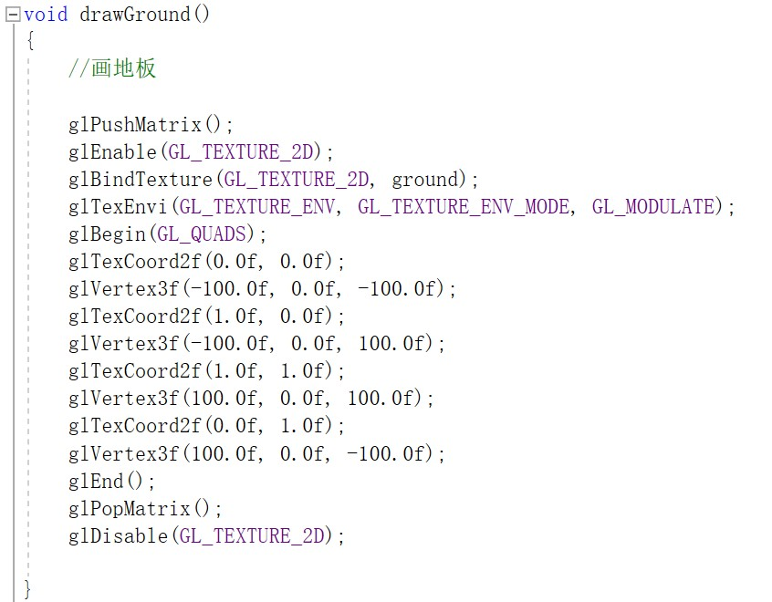
效果图：
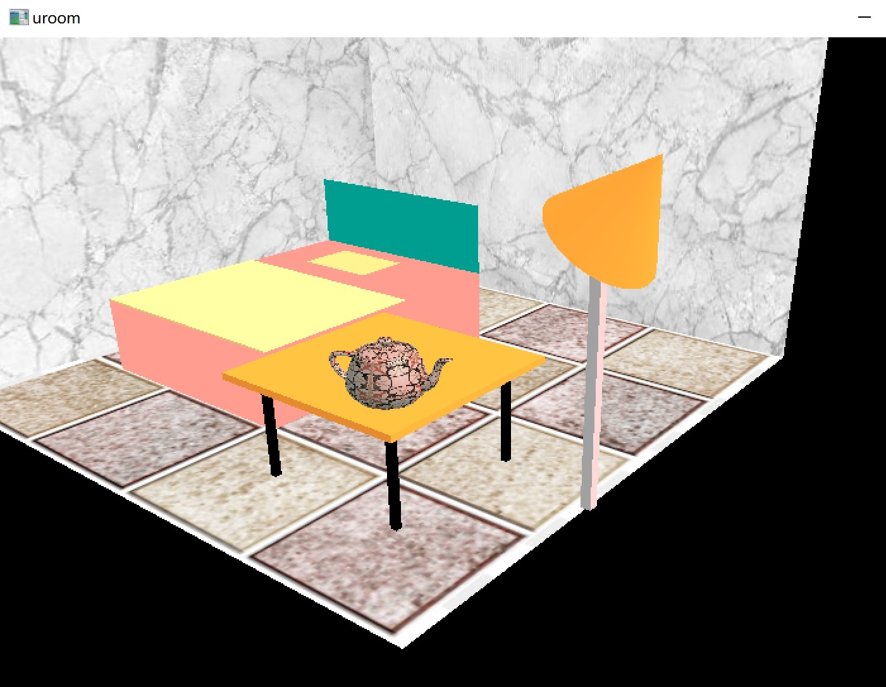
注意：
1、 在贴图时需要给当前的顶点赋予一个贴图坐标，调用glTexCoord2f()，如果不调用的话，纹理显示不出来。
2、 glTexEnvi()函数用于设置当前的纹理映射方式，默认情况下贴图模式是GL_MODULATE，在这种模式下，OpenGL会根据当前的光照系统调整物体的色彩和明暗。
光照设计
在图形学中光源类型主要有四种：环境光、平行光、点光源、聚光灯。在光照设计时主要运用的函数有：
1、控制光照的函数：glEnable(GL_LIGHTING)、glEnable(GL_LIGHT0)、glDisable(GL_LIGHT0)。
其中，glEnable(GL_LIGHTING)相当于开启灯光总闸，glEnable(GL_LIGHT0)、glDisable(GL_LIGHT0)相当于开启/关闭某一盏灯。
2、设置光源参数的函数：glLightModelfv()。
我们可以设置光源的环境光、散射光、平行光、光源位置等。
3、设置物体的材质函数：glMaterialfv()
本设计主要实现了环境光、平行光和点光源，以及茶壶的材质。
设置环境光
OpenGL提供了一个全局光源，它只发射环境光。
具体实现如下：
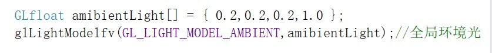
效果图：
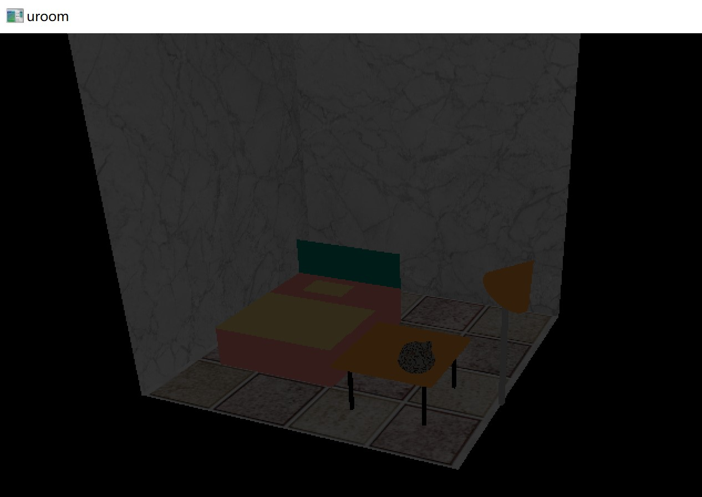
设置平行光和点光源
平行光是方向性光源，不考虑光的衰减，点光源是位置性光源，要考虑光的衰减。在设置位置属性时，最后一个参数是0则是平行光，最后一个参数非0则是点光源。
具体实现如下：
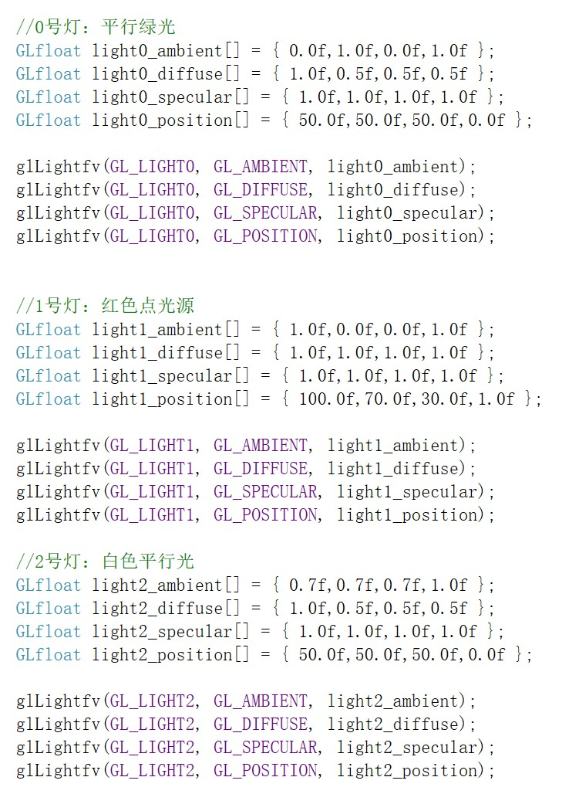
效果图：
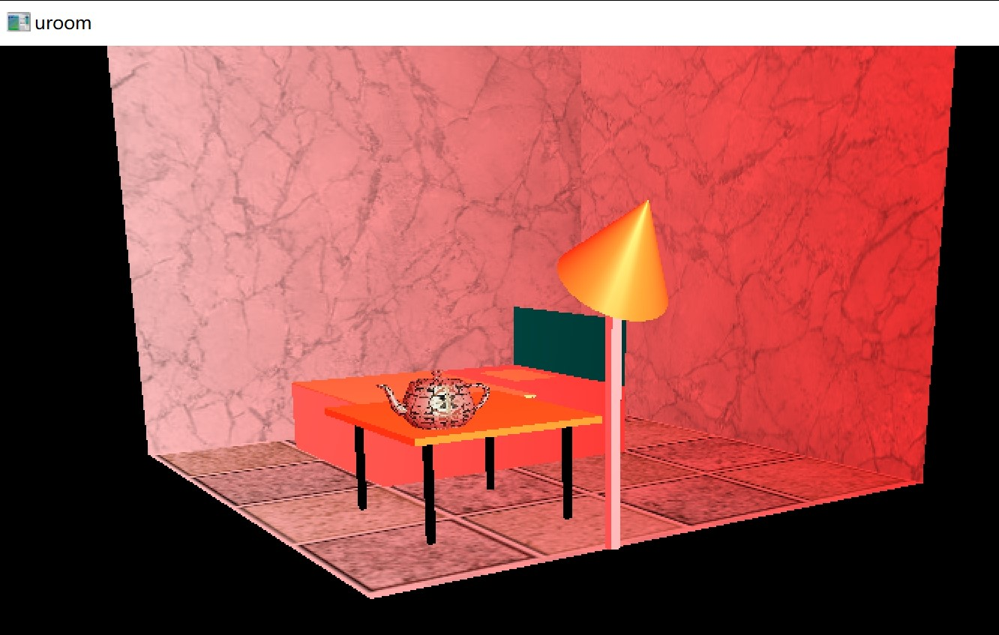
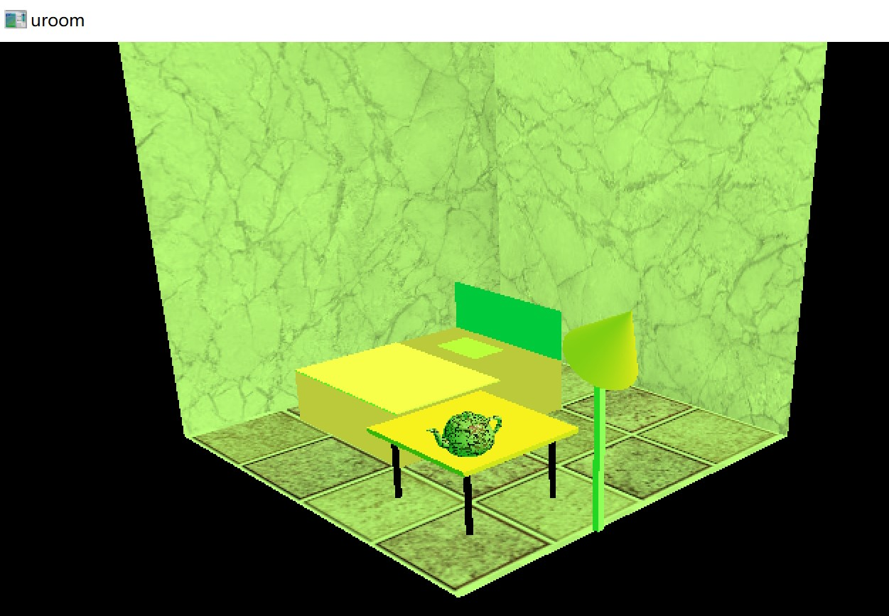
3、 设置茶壶的材质参数
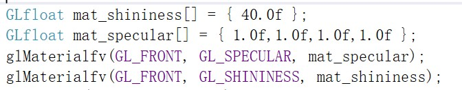
效果图：
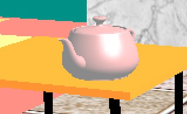
场景漫游
本设计主要使用键盘控制和鼠标移动来实现视点在场景中的漫游。
通过改变gluLookAt()函数中的参数更换视角和场景大小。
函数原型：
void gluLookAt(GLdouble eyex,GLdouble eyey,GLdouble eyez,GLdouble centerx,GLdouble centery,GLdouble centerz,GLdouble upx,GLdouble upy,GLdouble upz);
{eyex,eyey,eyez}
确定相机在世界坐标的位置
{centerx,centery,centerz}
确定相机镜头对准的物体在世界坐标的位置
{upx,upy,upz}
确定相机向上的方向在世界坐标中的方向初始状态设置：
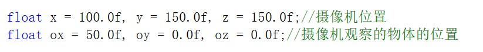
键盘上的Q、E、W、S、A、D键分别控制摄像机上下前后左右移动。
效果图：
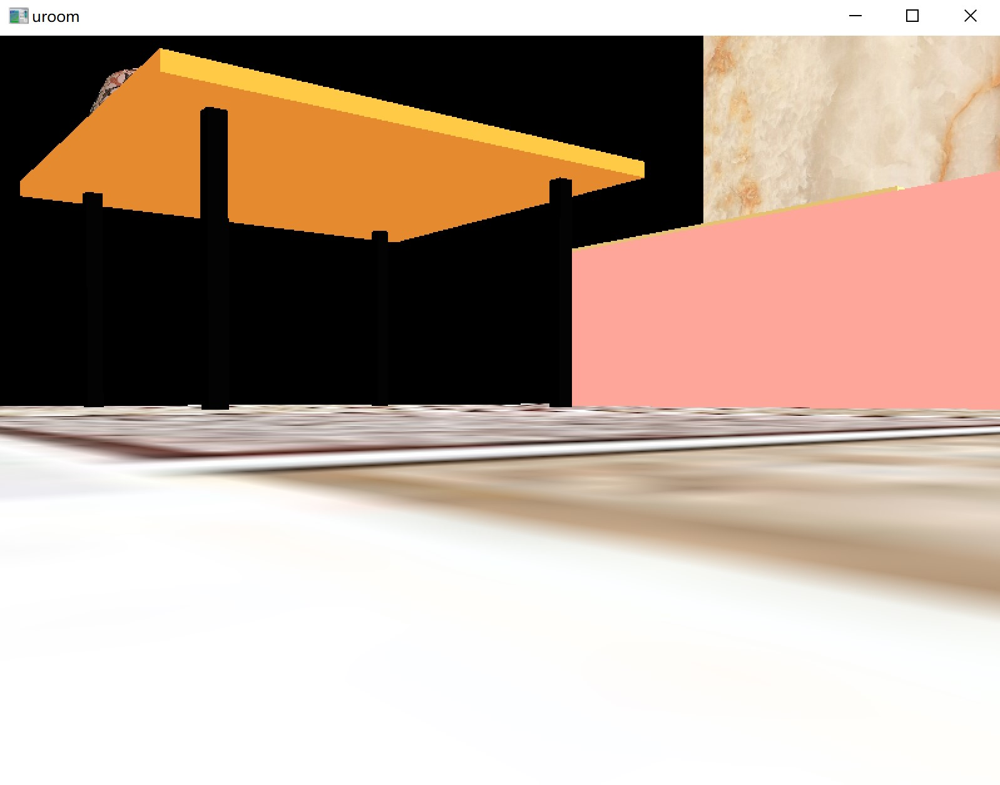
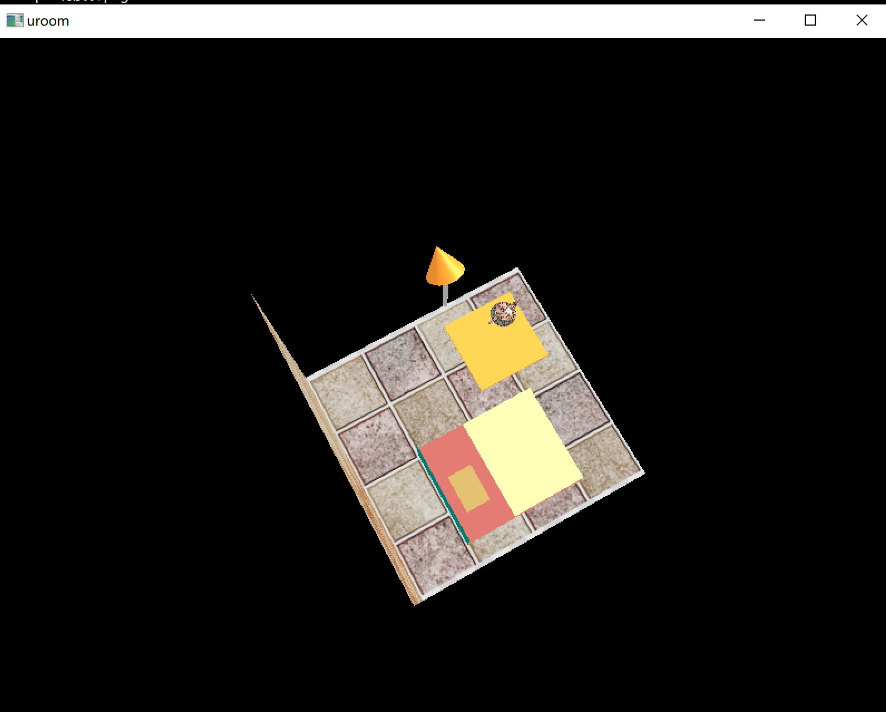
系统特色
本设计具有良好的交互性，通过键盘和鼠标可以实现以下功能：
1、进行任意视角的观察
2、更换壁纸
3、开关灯和光源切换
4、旋转茶壶
5、（取消）茶壶纹理
6、移动桌子
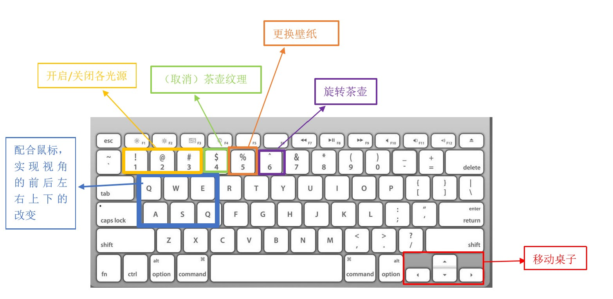
遇到的问题和解决方法
1、在设计纹理贴图功能时，已经加载了纹理，但是没有纹理出来，只有纹理的颜色在物体上，在浏览相关的博客和论文后，比对自己的代码，发现自己没有设置贴图坐标。
2、在设计光源的开关时，把
glEnable(GL_LIGHT0);
写成了
glEnable(light0);
于是一直没有实现光源的开关效果，一直以为是有一些代码没有写全，所以无法实现，最后在通读整段代码一一排查时发现了这个盲点。
3、在实现键盘控制视角时，一开始没有加重新调用gluLookAt()的代码，发现无法实现交互，我以为在初始化的函数里调用了就可以了，我想可能是我搞错了初始化函数的工作周期，后来阅读别人的代码并且查询了glutDisplayFunc()的相关知识才了解，init()就是刚运行时调用，之后就是display函数里的内容一直在重绘刷新。
总结
经过不断地学习和调试，本设计已经完成，但还有一些没有解决的问题和改善的方向：
1、对茶桌地纹理贴图没有实现，即如何对glutsolidcube贴图。
2、虽然已经有了光影的效果，但是没能实现影子的映射。
3、在场景漫游设计时误打误撞实现了鼠标交互，经过排查，应该是与设置的摄像机位置的变量有关，当把
float x=100.0f,y=150.0f,z=150.0f;
改成其他的变量名之后，
比如
float cx=100.0f,cy=150.0f,cz=150.0f;
鼠标交互就不能用了。截止到写实验报告的时候，还没有想/查明白原因。
4、仅实现了茶壶的材质设置，没有实现所有物体的材质设置。
在之前的图形学学习中，虽然有学习和涉及OpenGL的相关函数，但在平时的实验中没有用过OpenGL，为了这次实验才认认真真的研究OpenGL的内容，在研究了相关论文和函数后发现OpenGL真的是一个性能很强大、易于上手的图形库，尤其在渲染方面还有许多功能值得我去挖掘和学习。
在刚开始着手实验时，我一头雾水，感觉无从下手，即使看了OpenGL的一些论文后也不知道怎么处理新建的项目。然后开始复现别人的例子，在复现时有许多函数不理解，便一个一个去查他们的作用和调用方法，在这期间我渐渐对搭建场景有了一个大概的实现步骤，对光照、纹理、漫游等有了一个操作的经验，后期设计和实现时就熟练很多了。通过这次OpenGL的实验和之前对一些软件的学习经历，我发现对于实际的应用软件，光是学习理论知识，从书本上了解了函数的功能是不够的，只有实际操作了才知道如何运用他们并且真正的记住了这些函数，我也很享受一步步掌握并且应用他们的过程。